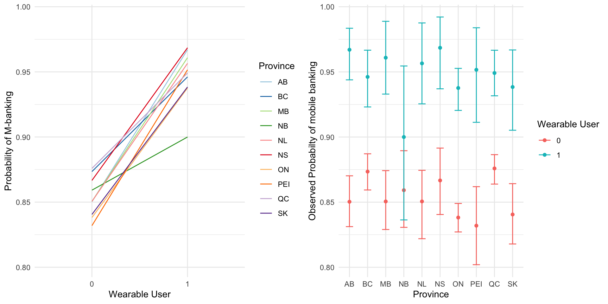

data_2022 <- read_dta("data/00_CIUS2022.dta")
ds00 <- data_2022
dim(ds00)[1] 25118 342
In this project, I focused on analyzing how mental health relates to mobile banking adoption. I used data from the Canadian Internet Use Survey 2022, which includes questions about various digital habits, and demographics. You can find the dataset here.
For this project, I conducted a comparative analysis of two logistic regression models one for smartphone users, refered to from here on out and PHONE users and one for smart wearable users, refered to as WEAR users. Since the sampling methodology involved clustering by provinces, I considered robust standard errors for reporting the results. To build the models, I needed to conceptualize technology, in this case, m-banking adoption. Since I’m considering two different devices, I needed factors that impact m-banking decisions for both devices to be able to compare them.
This was very challenging because there are not many m-banking using smartwearable device studies! So, I broadened the scope to consider any technology adoption. This is ok to do as long as the factors are not specific to a niche context. The variables are Trust, Perceived Security, Perceived Value, and few demographic varaibles such as Age, Gender, Education and Income.
Here are my hypotheses:
Note that not all libraries may be utilized. The most important ones are dplyr, lme4, tidyr, lavaan, ggplot2, psych, corrr, haven, poLCA and any related libraries to these.
This dataset is very similar to CIUS 2020 from study 2. I first started by reading the entire PUMF file available.
This gives you information on how the survey was set up, why, and how things were measured. Then, I looked at the individual survey questions to see the available data, and how they were measured. In general, questions are measured numerically were answeres follow as such: > Yes : 1, No : 2, Valid Skip: 6, Don’t Know: 7, Refusal: 8, Not Stated: 9 Of course this differs question-by-question as some questions have other answer categories and some questions (which were note used in my study) asked for numerical input from the participants (like how much did you spend online last year). To help readers understand the data, I will include the question exactly as it appears in the CIUS 2022 PUMF Data Dictionary with corresponding answer choices and codes. These will be in a blue-bordered box, and will include the Variable name (on the PUMF file), Concept, Question Body and Answers. Then I will show you in R code how I’ve re-coded and used the question as a model variable. The Variables I need are as follows:
MBANK)PRVNC)AGE)SEX)EDU)INCOME)USR_TYP) - based on the following
isSmartPhone)isSmartWear)EFF_TIME)PSEC) - based on the following
SEC_RES_LOC)SEC_RES_DAT)SEC_ACC_WEBSEC)SEC_ACC_CHNGPRV)SECOPT_QS)SECOPT_PL)SECOPT_2FA)SECOPT_BIO)SECOPT_PAS)TRST_BANK)FAMSAT)The data is available in various formats. To avoid data loss, I decided to use the .dta format (SAS file). You need the haven package to read SAS files. This is how you’d read a SAS file:
data_2022 <- read_dta("data/00_CIUS2022.dta")
ds00 <- data_2022
dim(ds00)[1] 25118 342ds0 <- ds00Since these are not direct questions but information retrieved from other sources (such as postal codes for province), some of them do not have Skips/Don’t Know/Refusal/Not Stated answers. If they have, I have added those to the cards.
Province, Age, Sex, Education, Income:
Variable Name: PROVINCE
Concept: PROVINCE
Question Text/Note:
Information derived using postal codes.
| Answer Categories | Code |
|---|---|
| Newfoundland and Labrador | 10 |
| Prince Edward Island | 11 |
| Nova Scotia | 12 |
| New Brunswick | 13 |
| Quebec | 24 |
| Ontario | 35 |
| Manitoba | 46 |
| Saskatchewan | 47 |
| Alberta | 48 |
| British Columbia | 59 |
| Valid skip | 96 |
| Don’t know | 97 |
| Refusal | 98 |
| Not stated | 99 |
Variable Name: AGE_GRP
Concept: Age Groups - Derived variable
Question Text/Note:
Information derived from age of persons in household.
| Answer Categories | Code |
|---|---|
| 15 to 24 years | 01 |
| 25 to 34 years | 02 |
| 35 to 44 years | 03 |
| 45 to 54 years | 04 |
| 55 to 64 years | 05 |
| 65 years and over | 06 |
| Valid skip | 96 |
| Don’t know | 97 |
| Refusal | 98 |
| Not stated | 99 |
Variable Name: GENDER
Concept: Gender - Derived variable
Question Text/Note:
Refers to current gender which may be different from sex assigned at birth and may be different from what is indicated on legal documents. For data quality and confidentiality reasons, and because of the small population being measured, the dissemination of data according to ’Non binary’ Gender is not possible for this statistical program. So, this release uses a gender variable with only two categories. This variable is derived by looking at a large number of demographic characteristics from the respondent, it allows us to disseminate data on Gender that is reliable and unbiased.
| Answer Categories | Code |
|---|---|
| Male | 1 |
| Female | 2 |
| Valid skip | 6 |
| Don’t know | 7 |
| Refusal | 8 |
| Not stated | 9 |
Variable Name: EMP
Concept: Employment status - Derived variable
Question Text/Note:
| Answer Categories | Code |
|---|---|
| Employed | 1 |
| Not employed | 2 |
| Valid skip | 6 |
| Don’t know | 7 |
| Refusal | 8 |
| Not stated | 9 |
Variable Name: EDU
Concept: Highest certificate - Derived variable
Question Text/Note:
| Answer Categories | Code |
|---|---|
| High school or less | 1 |
| Some post-secondary (incl. univ certificate) | 2 |
| University degree | 3 |
| Valid skip | 6 |
| Don’t know | 7 |
| Refusal | 8 |
| Not stated | 9 |
Variable Name: HINCQUIN
Concept: Census family income quintile - Derived variable
Question Text/Note:
Information derived using HINC. In order to obtain equal weighted counts in each category, cases with incomes equal to the category cutoffs were randomly assigned to one of the two categories on either side of the cutoff.
Source Annual Income Estimates for Census Families and Individuals (T1 Family File)
| Answer Categories | Code |
|---|---|
| Quintile 1 - \leq $42,256 | 1 |
| Quintile 2 - $42,257 - $72,366 | 2 |
| Quintile 3 - $72,367 - $107,480 | 3 |
| Quintile 4 - $107,481 - $163,750 | 4 |
| Quintile 5 - > $163,750 | 5 |
| Valid skip | 6 |
| Don’t know | 7 |
| Refusal | 8 |
| Not stated | 9 |
ds0 <- ds0 %>% mutate(
ID = as.factor(pumfid),
PRVNC = case_when(
province == 10 ~ "NL",
province == 11 ~ "PEI",
province == 12 ~ "NS",
province == 13 ~ "NB",
province == 24 ~ "QC",
province == 35 ~ "ON",
province == 46 ~ "MB",
province == 47 ~ "SK",
province == 48 ~ "AB",
province == 59 ~ "BC",
.default = "default"
),
AGE = ifelse(
AGE_GRP > 10,
0,
AGE_GRP
),
SEX = case_when(
gender == 1 ~ 0, #"M",
gender == 2 ~ 1, #"F",
.default = -1 #"default" #other
),
EMP = case_when(
emp == 1 ~ 1,
emp == 2 ~ 0, #no
.default = -1
),
EDU = case_when(
edu == 1 ~ 1, #"Highschool",
edu == 2 ~ 2, #"College",
edu == 3 ~ 3, #"University",
.default = 0 #"default"
),
INCOME = case_when(
hincquin == 1 ~ 1, #"Q1",
hincquin == 2 ~ 2, #"Q2",
hincquin == 3 ~ 3, #"Q3",
hincquin == 4 ~ 4, #"Q4",
hincquin == 5 ~ 5, #"Q5",
.default = 0 #"default"
)
)Devices and Mbanking:
Variable Name: DV_010A
Concept: Devices used
Question Text/Note:
During the past three months, what devices did you use to access the Internet? Did you use: A smartphone
| Answer Categories | Code |
|---|---|
| Yes | 1 |
| No | 2 |
| Valid skip | 6 |
| Don’t know | 7 |
| Refusal | 8 |
| Not stated | 9 |
Variable Name: DV_010G
Concept: Devices used
Question Text/Note:
During the past three months, what devices did you use to access the Internet? Did you use: Internet-connected wearable smart devices
| Answer Categories | Code |
|---|---|
| Yes | 1 |
| No | 2 |
| Valid skip | 6 |
| Don’t know | 7 |
| Refusal | 8 |
| Not stated | 9 |
CIUS’s Microdata User Guide has a section (section 4. Concepts and Defintions) but it does not include a definition for Internet connected smart wearable devices. Using the internet, some examples of these smart wearable devices are: - Smart glasses - Smart watch - Fitness Trackers - Smart Shirt - GPS devices (SGPS/GPRS Body Control) - Bluetooth Key Trackers - Smart Belts - Smart Rings - Smart Bracelets - Virtual Reality devices - Smart clothing
More specific to Canada, according to Ingenium.ca, the top devices are: - Smartwatches (Apple Watch, Samsung Galaxy Watch and Fitbits) - Fitness Trackers (Fitbit, Garmin) - Health Monitoring Devices (continuous glucose monitors)
Also true from CIUS 2020’s report: > In addition, 14% of Canadians used Internet-connected wearable smart devices, such as a smart watch, Fit Bit or glucose monitoring device
It’s safe to assume that smart wearables most definitely include smartwatches.
Variable Name: UI_050D
Concept: Activities related to other online activities
Question Text/Note:
During the past three months, which of the following other online activities, have you done over the Internet? Have you: Conducted online banking
| Answer Categories | Code |
|---|---|
| Yes | 1 |
| No | 2 |
| Valid skip | 6 |
| Don’t know | 7 |
| Refusal | 8 |
| Not stated | 9 |
ds0 <- ds0 %>% mutate(
SMRTPHN = case_when(
DV_010A == 1 ~ 1,
DV_010A == 2 ~ 0,
.default = -1
),
SMRTWTCH = case_when(
DV_010G == 1 ~ 1,
DV_010G == 2 ~ 0,
.default = -1
),
MBANK = case_when(
UI_050D == 1 ~ 1,
UI_050D == 2 ~ 0,
.default = -1
)
)Time Saving Effects
Variable Name: UI_110E
Concept: Effects of the use of online activities
Question Text/Note:
During the past 12 months, did your use of online activities have any of the following effects? Did it: Save you time
| Answer Categories | Code |
|---|---|
| Yes | 1 |
| No | 2 |
| Valid skip | 6 |
| Don’t know | 7 |
| Refusal | 8 |
| Not stated | 9 |
ds0 <- ds0 %>% mutate(
EFF_TIME = case_when(
UI_110E == 1 ~ 1,
UI_110E == 2 ~ 0,
.default = -1
)
)And since the online activity I’m considering is mobile banking, this would be about mobile banking (more on this in my paper, as it’s not entirely true - this is a limitation).
Security
Variable Name: SP_010A
Concept: Activities carried out to manage access to personal data
Question Text/Note:
Have you carried out any of the following to manage access to your personal data over the Internet during the past 12 months? Have you: Restricted or refused access to your geographical location
| Answer Categories | Code |
|---|---|
| Yes | 1 |
| No | 2 |
| Valid skip | 6 |
| Don’t know | 7 |
| Refusal | 8 |
| Not stated | 9 |
Variable Name: SP_010B
Concept: Activities carried out to manage access to personal data
Question Text/Note:
Have you carried out any of the following to manage access to your personal data over the Internet during the past 12 months? Have you: Refused allowing the use of personal data for advertising purposes
| Answer Categories | Code |
|---|---|
| Yes | 1 |
| No | 2 |
| Valid skip | 6 |
| Don’t know | 7 |
| Refusal | 8 |
| Not stated | 9 |
Variable Name: SP_010C
Concept: Activities carried out to manage access to personal data
Question Text/Note:
Have you carried out any of the following to manage access to your personal data over the Internet during the past 12 months? Have you: Checked that the website where you provided personal data was secure
| Answer Categories | Code |
|---|---|
| Yes | 1 |
| No | 2 |
| Valid skip | 6 |
| Don’t know | 7 |
| Refusal | 8 |
| Not stated | 9 |
Variable Name: SP_010D
Concept: Activities carried out to manage access to personal data
Question Text/Note:
Have you carried out any of the following to manage access to your personal data over the Internet during the past 12 months? Have you: Changed the privacy settings on accounts or apps
| Answer Categories | Code |
|---|---|
| Yes | 1 |
| No | 2 |
| Valid skip | 6 |
| Don’t know | 7 |
| Refusal | 8 |
| Not stated | 9 |
Security Measures - Setting Up
Variable Name: SP_020A
Concept: Verified identity over the Internet
Question Text/Note:
During the past 12 months, did you enable any of the following optional security features to verify your identity when accessing accounts or applications over the Internet? Did you enable: Answers to personalized security questions
| Answer Categories | Code |
|---|---|
| Yes | 1 |
| No | 2 |
| Valid skip | 6 |
| Don’t know | 7 |
| Refusal | 8 |
| Not stated | 9 |
Variable Name: SP_020B
Concept: Verified identity over the Internet
Question Text/Note:
During the past 12 months, did you enable any of the following optional security features to verify your identity when accessing accounts or applications over the Internet? Did you enable: Partner login
| Answer Categories | Code |
|---|---|
| Yes | 1 |
| No | 2 |
| Valid skip | 6 |
| Don’t know | 7 |
| Refusal | 8 |
| Not stated | 9 |
Variable Name: SP_020C
Concept: Verified identity over the Internet
Question Text/Note:
During the past 12 months, did you enable any of the following optional security features to verify your identity when accessing accounts or applications over the Internet? Did you enable: Two-factor authentication or two-step verification
| Answer Categories | Code |
|---|---|
| Yes | 1 |
| No | 2 |
| Valid skip | 6 |
| Don’t know | 7 |
| Refusal | 8 |
| Not stated | 9 |
Variable Name: SP_020D
Concept: Verified identity over the Internet
Question Text/Note:
During the past 12 months, did you enable any of the following optional security features to verify your identity when accessing accounts or applications over the Internet? Did you enable: Biometric security features for online functions
| Answer Categories | Code |
|---|---|
| Yes | 1 |
| No | 2 |
| Valid skip | 6 |
| Don’t know | 7 |
| Refusal | 8 |
| Not stated | 9 |
Variable Name: SP_020E
Concept: Verified identity over the Internet
Question Text/Note:
During the past 12 months, did you enable any of the following optional security features to verify your identity when accessing accounts or applications over the Internet? Did you enable: Password manager program
| Answer Categories | Code |
|---|---|
| Yes | 1 |
| No | 2 |
| Valid skip | 6 |
| Don’t know | 7 |
| Refusal | 8 |
| Not stated | 9 |
ds0 <- ds0 %>% mutate(
SEC_RES_LOC = case_when(
SP_010A == 1 ~ 1,
SP_010A == 2 ~ 0,
.default = -1
),
SEC_RES_DAT = case_when(
SP_010B == 1 ~ 1,
SP_010B == 2 ~ 0,
.default = -1
),
SEC_ACC_WEBSEC = case_when(
SP_010C == 1 ~ 1,
SP_010C == 2 ~ 0,
.default = -1
),
SEC_ACC_CHNGPRV = case_when(
SP_010D == 1 ~ 1,
SP_010D == 2 ~ 0,
.default = -1
),
SECOPT_QS = case_when(
SP_020A == 1 ~ 1,
SP_020A == 2 ~ 0,
.default = -1
),
SECOPT_PL = case_when(
SP_020B == 1 ~ 1,
SP_020B == 2 ~ 0,
.default = -1
),
SECOPT_2FA = case_when(
SP_020C == 1 ~ 1,
SP_020C == 2 ~ 0,
.default = -1
),
SECOPT_BIO = case_when(
SP_020D == 1 ~ 1,
SP_020D == 2 ~ 0,
.default = -1
),
SECOPT_PAS = case_when(
SP_020E == 1 ~ 1,
SP_020E == 2 ~ 0,
.default = -1
)
)Trust In Banks/Financial Institutes
Variable Name: SP_040B
Concept: Personal information - Trust in organizations
Question Text/Note:
In general, on a scale from 1 to 5 where 1 means “cannot be trusted at all” and 5 means “can be trusted completely”, to what extent do you trust the following organizations with your personal information? Would you say: b. Banking or other financial institutions
| Answer Categories | Code |
|---|---|
| 1 - Cannot be trusted at all | 1 |
| 2 | 2 |
| 3 - Neutral | 3 |
| 4 | 4 |
| 5 - Can be trusted completely | 5 |
| Valid skip | 6 |
| Don’t know | 7 |
| Refusal | 8 |
| Not stated | 9 |
ds0 <- ds0 %>% mutate(
TRST_BANK = case_when(
SP_040B == 1 ~ 1, #cannot be trusted
SP_040B == 2 ~ 2,
SP_040B == 3 ~ 3, #neutral
SP_040B == 4 ~ 4,
SP_040B == 5 ~ 5, #totally trusted
.default = 0
)
)Selecting only the useful columns:
ds_useful <- ds0 %>% dplyr::select(wtpg:TRST_BANK)I have to make sure that online banking is actually capturing mobile banking, so, people must be smartphone users:
ds_mobilebank <- ds_useful %>% filter(SMRTPHN == 1)dim(ds_mobilebank)[1] 20136 22Looking at the data,
glimpse(ds_mobilebank)Rows: 20,136
Columns: 22
$ wtpg <dbl> 1264.0837, 3413.0468, 585.5445, 378.8767, 4060.0513, 7…
$ ID <fct> 100001, 100002, 100004, 100005, 100007, 100008, 100009…
$ PRVNC <chr> "QC", "MB", "QC", "SK", "QC", "QC", "AB", "ON", "SK", …
$ AGE <dbl> 3, 1, 5, 4, 2, 4, 6, 3, 3, 6, 2, 3, 4, 5, 4, 5, 5, 4, …
$ SEX <dbl> 1, 0, 0, 0, 1, 0, 0, 1, 1, 0, 1, 1, 1, 0, 1, 0, 0, 0, …
$ EMP <dbl> 1, 0, 0, 1, 1, 1, 0, 1, -1, 0, 1, 1, 1, -1, 1, 1, 0, 1…
$ EDU <dbl> 3, 1, 2, 1, 2, 2, 2, 2, 0, 3, 3, 3, 3, 2, 1, 3, 3, 2, …
$ INCOME <dbl> 2, 2, 4, 2, 2, 5, 5, 5, 5, 4, 3, 4, 3, 3, 1, 4, 2, 4, …
$ SMRTPHN <dbl> 1, 1, 1, 1, 1, 1, 1, 1, 1, 1, 1, 1, 1, 1, 1, 1, 1, 1, …
$ SMRTWTCH <dbl> 0, 0, 0, 0, 1, 0, 0, 0, 1, 1, 0, 0, 0, 0, 0, 0, 0, 0, …
$ MBANK <dbl> 1, 0, 1, 0, 1, 1, 1, 1, 1, 1, 1, 1, 1, 1, 1, 1, 1, 1, …
$ EFF_TIME <dbl> 0, 0, 1, 0, 0, 1, 1, 0, 1, 1, 1, 0, 1, 1, 0, 1, 0, 1, …
$ SEC_RES_LOC <dbl> 1, 0, 1, 0, 0, 0, 0, 1, -1, 0, 1, 1, 1, 0, 1, 1, 0, 0,…
$ SEC_RES_DAT <dbl> 1, 0, 1, 0, 0, 0, 1, 0, -1, 0, 1, 1, 1, 0, 1, 1, 0, 0,…
$ SEC_ACC_WEBSEC <dbl> 1, 0, 0, 0, 1, 0, 1, 0, -1, 0, 0, 0, 0, 0, 1, 1, 0, 0,…
$ SEC_ACC_CHNGPRV <dbl> 1, 0, 1, 0, 0, 0, 1, 0, -1, 0, 1, 0, 1, 0, 1, 1, 0, 0,…
$ SECOPT_QS <dbl> 1, 0, 1, 0, 0, 0, 1, 1, -1, 1, 1, 0, 0, 1, 1, 1, 0, 1,…
$ SECOPT_PL <dbl> 1, 0, 0, 0, 0, 0, 0, 0, -1, 0, 0, 0, 1, 0, 1, 0, 0, 1,…
$ SECOPT_2FA <dbl> 1, 0, 1, 0, 0, 0, 0, 1, -1, 1, 1, 1, 1, 1, 1, 1, 0, 1,…
$ SECOPT_BIO <dbl> 0, 0, 0, 0, 1, 0, 1, 0, -1, 0, 1, 1, 0, 0, 1, 1, 0, 1,…
$ SECOPT_PAS <dbl> 1, 0, 0, 0, 0, 0, 0, 0, -1, 0, 1, 1, 0, 0, 1, 1, 0, 0,…
$ TRST_BANK <dbl> 3, 3, 3, 3, 3, 4, 3, 3, 0, 5, 4, 4, 3, 3, 3, 4, 4, 5, …I see there are some -1 values and some values that don’t make sense. Drop these. The data is large enough such that 100 rows won’t affect the analysis.
cleaned_ds <- ds_mobilebank %>% filter(
!is.na(AGE) &
SEX != -1 &
EDU != -1 &
EDU != 0 &
INCOME != -1 &
SMRTWTCH != -1 &
MBANK != -1 &
EFF_TIME != -1 &
SEC_RES_LOC != -1 &
SEC_RES_DAT != -1 &
SEC_ACC_WEBSEC != -1 &
SEC_ACC_CHNGPRV != -1 &
SECOPT_QS != -1 &
SECOPT_PL != -1 &
SECOPT_2FA != -1 &
SECOPT_BIO != -1 &
SECOPT_PAS != -1 &
TRST_BANK != -1 &
TRST_BANK != 0
)dim(cleaned_ds)[1] 18552 22Saving this in a database called wrk_ds (working database):
wrk_ds <- cleaned_dsSince there is no perceived security measure I need to define it as a latent variable. In the CIUS2022, there’s no single, direct question asking:
How secure do you think mobile banking is?
That means “Perceived Security” isn’t directly measured. However, we have multiple related questions (e.g., about data protection, privacy, security measures, etc.). These indirect items are observable variables that reflect an unobservable (latent) concept: the user’s overall perception of security.
I use Confirmatory Factor Analysis (CFA) to test if these items really reflect one underlying factor, i.e., PSEC. This increases measurement reliability. Here are the steps of CFA:
Step 1. Reliability Check Using Cronbach’s Alpha, I check the internal consistency of the items. Usually, if \alpha > 0.7, the items are measuring the same idea.
alph <- psych::alpha(wrk_ds[, c("SEC_RES_LOC", "SEC_RES_DAT", "SEC_ACC_WEBSEC", "SEC_ACC_CHNGPRV",
"SECOPT_QS", "SECOPT_PL", "SECOPT_2FA",
"SECOPT_BIO", "SECOPT_PAS")])
alph$total$raw_alpha[1] 0.8103267Which means the measurement is strong.
Step 2. Exploratory Factor Check With Parallel Analysis, I can decide how many factors to extract.
fa.parallel(wrk_ds[, c("SEC_RES_LOC", "SEC_RES_DAT", "SEC_ACC_WEBSEC", "SEC_ACC_CHNGPRV",
"SECOPT_QS", "SECOPT_PL", "SECOPT_2FA", "SECOPT_BIO", "SECOPT_PAS")],
fa = "fa")Note: the eighenvalue on the y-axis is basically the varaince each factor explains
From a parallel scree plot, you should look for an “elbow” - this is where the curve changes direction, which looks like 2 here. Parallel analysis suggests 2 separate factors. That is, it could be that the factors I’m looking at are actually describing two different latent ideas:
However, I still think they’re basically both perceptions of security of an app. You only do these things if you think the app is not secure or you’re worried about security. So, I’ll keep these factors and decide if something should be combined or dropped from CFA results.
Step 3. Confirmatory Factor Analysis The mathematical model is
X_i = \lambda_i PSEC_i + \epsilon_i
Where X_i’s are the observed variables, \lambda_i is factor loading of varaible i and \epsilon is the error term. This is as if asking “can all 9 items be explained by 1 variable (PSEC)?”. I’m adding covariances to improve the model fit. How did I decide how to add covariates (this notation \sim\sim)? Trial and error, tbh! But also, mostly intuitive. The questions about security measures like setting up 2FA, questions, biometrics, password managers and partner login are all kind of related (to the same idea of “setting up and using security measures/features”). They have the same context on CIUS questionnairs, too. Similarly, the data and location access are kind of about the same idea: they’re both restrictions on what is shared about you. Lastly, changing privacy and checking a website’s security is are both activities that are not part of security features. There’s no set up, and all websites and apps have to allow you to be able to change privacy settings and you can check any website.
f1 <- '
f =~ SEC_RES_LOC + SEC_RES_DAT + SEC_ACC_WEBSEC + SEC_ACC_CHNGPRV + SECOPT_QS + SECOPT_PL + SECOPT_2FA + SECOPT_BIO + SECOPT_PAS
# Adding covariances between related error terms (based on modindices)
SEC_RES_LOC ~~ SEC_RES_DAT
SECOPT_QS ~~ SECOPT_2FA
SECOPT_BIO ~~ SECOPT_PAS
SEC_ACC_WEBSEC ~~ SEC_ACC_CHNGPRV
SECOPT_QS ~~ SECOPT_PL
'
compatibility_fac <- cfa(f1, data = wrk_ds, std.lv = TRUE)
summary(compatibility_fac, fit.measures = TRUE, standardized = TRUE)lavaan 0.6.16 ended normally after 43 iterations
Estimator ML
Optimization method NLMINB
Number of model parameters 23
Number of observations 18552
Model Test User Model:
Test statistic 1328.000
Degrees of freedom 22
P-value (Chi-square) 0.000
Model Test Baseline Model:
Test statistic 42055.218
Degrees of freedom 36
P-value 0.000
User Model versus Baseline Model:
Comparative Fit Index (CFI) 0.969
Tucker-Lewis Index (TLI) 0.949
Loglikelihood and Information Criteria:
Loglikelihood user model (H0) -93888.613
Loglikelihood unrestricted model (H1) -93224.613
Akaike (AIC) 187823.227
Bayesian (BIC) 188003.278
Sample-size adjusted Bayesian (SABIC) 187930.185
Root Mean Square Error of Approximation:
RMSEA 0.057
90 Percent confidence interval - lower 0.054
90 Percent confidence interval - upper 0.059
P-value H_0: RMSEA <= 0.050 0.000
P-value H_0: RMSEA >= 0.080 0.000
Standardized Root Mean Square Residual:
SRMR 0.034
Parameter Estimates:
Standard errors Standard
Information Expected
Information saturated (h1) model Structured
Latent Variables:
Estimate Std.Err z-value P(>|z|) Std.lv Std.all
f =~
SEC_RES_LOC 0.274 0.004 74.861 0.000 0.274 0.581
SEC_RES_DAT 0.300 0.004 82.428 0.000 0.300 0.627
SEC_ACC_WEBSEC 0.281 0.004 70.897 0.000 0.281 0.564
SEC_ACC_CHNGPR 0.336 0.004 88.679 0.000 0.336 0.673
SECOPT_QS 0.258 0.004 65.258 0.000 0.258 0.523
SECOPT_PL 0.219 0.004 58.760 0.000 0.219 0.466
SECOPT_2FA 0.275 0.003 81.371 0.000 0.275 0.620
SECOPT_BIO 0.221 0.004 58.219 0.000 0.221 0.462
SECOPT_PAS 0.217 0.004 55.881 0.000 0.217 0.446
Covariances:
Estimate Std.Err z-value P(>|z|) Std.lv Std.all
.SEC_RES_LOC ~~
.SEC_RES_DAT 0.059 0.001 40.627 0.000 0.059 0.414
.SECOPT_QS ~~
.SECOPT_2FA 0.026 0.001 19.955 0.000 0.026 0.181
.SECOPT_BIO ~~
.SECOPT_PAS 0.033 0.002 21.891 0.000 0.033 0.180
.SEC_ACC_WEBSEC ~~
.SEC_ACC_CHNGPR 0.020 0.002 13.119 0.000 0.020 0.131
.SECOPT_QS ~~
.SECOPT_PL 0.021 0.001 14.773 0.000 0.021 0.119
Variances:
Estimate Std.Err z-value P(>|z|) Std.lv Std.all
.SEC_RES_LOC 0.147 0.002 80.302 0.000 0.147 0.663
.SEC_RES_DAT 0.139 0.002 76.666 0.000 0.139 0.607
.SEC_ACC_WEBSEC 0.169 0.002 79.760 0.000 0.169 0.682
.SEC_ACC_CHNGPR 0.137 0.002 70.015 0.000 0.137 0.547
.SECOPT_QS 0.176 0.002 83.349 0.000 0.176 0.726
.SECOPT_PL 0.173 0.002 88.126 0.000 0.173 0.783
.SECOPT_2FA 0.121 0.002 77.426 0.000 0.121 0.615
.SECOPT_BIO 0.180 0.002 88.309 0.000 0.180 0.787
.SECOPT_PAS 0.190 0.002 88.964 0.000 0.190 0.802
f 1.000 1.000 1.000For CFA, this is how you’d interpret the results:
| Metric | Desired Threshold | Description |
|---|---|---|
| CFI (Comparative Fit Index) | > 0.90 | Higher is better fit |
| TLI (Tucker-Lewis Index) | > 0.90 | Higher is better fit |
| RMSEA (Root Mean Square Error of Approx.) | < 0.08 or ideally < 0.05 | Lower is better (error) |
| SRMR (Standardized Root Mean Residual) | < 0.08 | Lower is better |
The more of these “checkboxes” your summary output checks, the better the fit for the factor. Factor loadings are about how strongly each factor represents/reflects the latent factor. The higher the values the better (and significant).
My results are excellent for now, but, it’s also good to check for residuals and correlations:
Step 4. Are Items Correlated?
modindices(compatibility_fac, sort = TRUE, minimum.value = 10) lhs op rhs mi epc sepc.lv sepc.all sepc.nox
53 SECOPT_PL ~~ SECOPT_PAS 169.942 0.018 0.018 0.100 0.100
54 SECOPT_2FA ~~ SECOPT_BIO 128.215 0.014 0.014 0.092 0.092
51 SECOPT_PL ~~ SECOPT_2FA 115.978 0.014 0.014 0.096 0.096
32 SEC_RES_DAT ~~ SEC_ACC_WEBSEC 111.173 0.012 0.012 0.081 0.081
52 SECOPT_PL ~~ SECOPT_BIO 92.814 0.013 0.013 0.074 0.074
46 SEC_ACC_CHNGPRV ~~ SECOPT_2FA 86.313 -0.012 -0.012 -0.090 -0.090
33 SEC_RES_DAT ~~ SEC_ACC_CHNGPRV 82.720 0.011 0.011 0.077 0.077
26 SEC_RES_LOC ~~ SEC_ACC_CHNGPRV 63.660 0.009 0.009 0.064 0.064
28 SEC_RES_LOC ~~ SECOPT_PL 58.695 -0.009 -0.009 -0.055 -0.055
45 SEC_ACC_CHNGPRV ~~ SECOPT_PL 56.901 -0.010 -0.010 -0.066 -0.066
30 SEC_RES_LOC ~~ SECOPT_BIO 46.796 -0.008 -0.008 -0.048 -0.048
41 SEC_ACC_WEBSEC ~~ SECOPT_2FA 38.361 -0.008 -0.008 -0.054 -0.054
35 SEC_RES_DAT ~~ SECOPT_PL 35.212 -0.007 -0.007 -0.044 -0.044
55 SECOPT_2FA ~~ SECOPT_PAS 32.752 0.007 0.007 0.046 0.046
36 SEC_RES_DAT ~~ SECOPT_2FA 30.066 -0.006 -0.006 -0.043 -0.043
31 SEC_RES_LOC ~~ SECOPT_PAS 25.153 -0.006 -0.006 -0.035 -0.035
38 SEC_RES_DAT ~~ SECOPT_PAS 23.792 -0.006 -0.006 -0.035 -0.035
42 SEC_ACC_WEBSEC ~~ SECOPT_BIO 22.575 -0.007 -0.007 -0.038 -0.038
43 SEC_ACC_WEBSEC ~~ SECOPT_PAS 19.748 -0.006 -0.006 -0.035 -0.035
37 SEC_RES_DAT ~~ SECOPT_BIO 18.991 -0.005 -0.005 -0.032 -0.032
34 SEC_RES_DAT ~~ SECOPT_QS 12.791 -0.004 -0.004 -0.026 -0.026
50 SECOPT_QS ~~ SECOPT_PAS 11.720 0.005 0.005 0.026 0.026A few modification indeces are quite large, indicating these variables are highly correlated. So, it’s a good idea to add a covariance for them to the model. However, adding too much risks complicating the model and potentially overfitting. Since my analysis so far shows strong fit (above 90% CFI), I stop here. However, there’s room for improvement!
Step 5. Check Sample-sized control RMSEA Since my sample size is quite large, the RMSEA is affected. In fact, all the metrics (especially \chi^2) are. So, I’ll calculate the sample-sized normalized RMSEA:
fitmeasures(compatibility_fac, "rmsea") / sqrt(18552)rmsea
0 And check the reliability of the model:
#reliability(compatibility_fac)Step 6. Subgroup Analysis Before we define PSEC, I have to figure out how many different categories I want. The smallest would be 2: high and low. I want to check for unobserved subgroups/subclasses. This is called Latent Class Analysis (LCA). Since the values for the items had 0’s in them, I have to add 1’s to everything (required for poLCA).
wrk_ds[, c("SEC_RES_LOC", "SEC_RES_DAT", "SEC_ACC_WEBSEC", "SEC_ACC_CHNGPRV",
"SECOPT_QS", "SECOPT_PL", "SECOPT_2FA", "SECOPT_BIO", "SECOPT_PAS")] <-
wrk_ds[, c("SEC_RES_LOC", "SEC_RES_DAT", "SEC_ACC_WEBSEC", "SEC_ACC_CHNGPRV",
"SECOPT_QS", "SECOPT_PL", "SECOPT_2FA", "SECOPT_BIO", "SECOPT_PAS")] + 1
form <- cbind(SEC_RES_LOC, SEC_RES_DAT, SEC_ACC_WEBSEC, SEC_ACC_CHNGPRV,
SECOPT_QS, SECOPT_PL, SECOPT_2FA, SECOPT_BIO, SECOPT_PAS) ~ 1
# Run LCA with 2 latent classes
lca_model <- poLCA(form, data = wrk_ds, nclass = 2, maxiter = 5000)Conditional item response (column) probabilities,
by outcome variable, for each class (row)
$SEC_RES_LOC
Pr(1) Pr(2)
class 1: 0.6822 0.3178
class 2: 0.1056 0.8944
$SEC_RES_DAT
Pr(1) Pr(2)
class 1: 0.7381 0.2619
class 2: 0.1067 0.8933
$SEC_ACC_WEBSEC
Pr(1) Pr(2)
class 1: 0.8797 0.1203
class 2: 0.3350 0.6650
$SEC_ACC_CHNGPRV
Pr(1) Pr(2)
class 1: 0.8775 0.1225
class 2: 0.2212 0.7788
$SECOPT_QS
Pr(1) Pr(2)
class 1: 0.7263 0.2737
class 2: 0.2124 0.7876
$SECOPT_PL
Pr(1) Pr(2)
class 1: 0.9084 0.0916
class 2: 0.5167 0.4833
$SECOPT_2FA
Pr(1) Pr(2)
class 1: 0.5936 0.4064
class 2: 0.0585 0.9415
$SECOPT_BIO
Pr(1) Pr(2)
class 1: 0.8906 0.1094
class 2: 0.4840 0.5160
$SECOPT_PAS
Pr(1) Pr(2)
class 1: 0.8515 0.1485
class 2: 0.4569 0.5431
Estimated class population shares
0.3951 0.6049
Predicted class memberships (by modal posterior prob.)
0.3843 0.6157
=========================================================
Fit for 2 latent classes:
=========================================================
number of observations: 18552
number of estimated parameters: 19
residual degrees of freedom: 492
maximum log-likelihood: -93737.84
AIC(2): 187513.7
BIC(2): 187662.4
G^2(2): 9189.15 (Likelihood ratio/deviance statistic)
X^2(2): 17134.16 (Chi-square goodness of fit)
summary(lca_model) Length Class Mode
llik 1 -none- numeric
attempts 1 -none- numeric
probs.start 9 -none- list
probs 9 -none- list
probs.se 9 -none- list
P.se 2 -none- numeric
posterior 37104 -none- numeric
predclass 18552 -none- numeric
P 2 -none- numeric
numiter 1 -none- numeric
probs.start.ok 1 -none- logical
coeff 1 -none- logical
coeff.se 1 -none- logical
coeff.V 1 -none- logical
eflag 1 -none- logical
npar 1 -none- numeric
aic 1 -none- numeric
bic 1 -none- numeric
Nobs 1 -none- numeric
Chisq 1 -none- numeric
predcell 11 data.frame list
Gsq 1 -none- numeric
y 9 data.frame list
x 1 data.frame list
N 1 -none- numeric
maxiter 1 -none- numeric
resid.df 1 -none- numeric
time 1 difftime numeric
call 5 -none- call Essentially, I’m grouping people into classes based on their security attitudes using the 9 items that I have. Let’s check the 2 classes results. How to interpret the results:
$SEC_RES_LOC Pr(1), class 1: 0.68 Pr(2), class 2: 0.11
Means people in class 1 are more likely to not restrict their location (SEC_RES_LOC = 0 has a higher chance in class 1). This can just be people with high and low security tolerance. The Estimated class population shares for classes are very close to the prediction of my model, i.e., Predicted class memberships (by modal posterior prob.). This means these are very good estimates. The fit statistics shows: AIC, BIC, deviance, and \chi^2.
Now let’s try for 2,3 and 4 classes and pick the best - using AIC/BIC (lower = better fit):
invisible(capture.output({lca_2 <- poLCA(form, data = wrk_ds, nclass = 2)}))
invisible(capture.output({lca_3 <- poLCA(form, data = wrk_ds, nclass = 3)}))
invisible(capture.output({lca_4 <- poLCA(form, data = wrk_ds, nclass = 4)}))
# Compare AIC and BIC
data.frame(
Classes = 2:4,
AIC = c(lca_2$aic, lca_3$aic, lca_4$aic),
BIC = c(lca_2$bic, lca_3$bic, lca_4$bic)
) Classes AIC BIC
1 2 187513.7 187662.4
2 3 183851.6 184078.7
3 4 180666.1 180971.4This is telling me PSEC should have 4 levels.
Step 7. Calculate Perceived Security Another way to define PSEC is to use Item Response Theory (1 parameter logistic model, Rasch Model). This will give a continous value for PSEC, which is preferrable for my analysis. Each item shares the same slope and I estimate
P(Y_{ij} = 1) = \frac{1}{1 + e^{PSEC_j - b_i}}
Where PSEC_j is person j’s perceived security and b_i is item i’s threshold. The idea is of b_i is: how hard is it for someone to agree with something. So, in my example, how high/low does the person’s security perception have to be to skip setting up 2FA/set up 2FA.
Note: IF PSEC = b, then the person has a 50-50 chance of agreeing.
Bottom line: - If an item has high threshold, only those with high perceived security agree with it. - If an item has low thresholds, most agree with.
So, let’s define PSEC:
# Run a 1-parameter logistic model (Rasch Model)
irt_model <- mirt(wrk_ds[, c("SEC_RES_LOC", "SEC_RES_DAT", "SEC_ACC_WEBSEC",
"SEC_ACC_CHNGPRV", "SECOPT_QS", "SECOPT_PL",
"SECOPT_2FA", "SECOPT_BIO", "SECOPT_PAS")], 1, itemtype="Rasch")
Iteration: 1, Log-Lik: -94814.100, Max-Change: 0.40153
Iteration: 2, Log-Lik: -93680.902, Max-Change: 0.41232
Iteration: 3, Log-Lik: -93047.348, Max-Change: 0.36846
Iteration: 4, Log-Lik: -92734.044, Max-Change: 0.29365
Iteration: 5, Log-Lik: -92591.472, Max-Change: 0.21441
Iteration: 6, Log-Lik: -92529.943, Max-Change: 0.14683
Iteration: 7, Log-Lik: -92504.107, Max-Change: 0.09617
Iteration: 8, Log-Lik: -92493.300, Max-Change: 0.06119
Iteration: 9, Log-Lik: -92488.690, Max-Change: 0.03822
Iteration: 10, Log-Lik: -92486.647, Max-Change: 0.02357
Iteration: 11, Log-Lik: -92485.693, Max-Change: 0.01445
Iteration: 12, Log-Lik: -92485.221, Max-Change: 0.00882
Iteration: 13, Log-Lik: -92484.970, Max-Change: 0.00567
Iteration: 14, Log-Lik: -92484.829, Max-Change: 0.00316
Iteration: 15, Log-Lik: -92484.756, Max-Change: 0.00192
Iteration: 16, Log-Lik: -92484.712, Max-Change: 0.00125
Iteration: 17, Log-Lik: -92484.685, Max-Change: 0.00070
Iteration: 18, Log-Lik: -92484.670, Max-Change: 0.00040
Iteration: 19, Log-Lik: -92484.661, Max-Change: 0.00028
Iteration: 20, Log-Lik: -92484.655, Max-Change: 0.00015
Iteration: 21, Log-Lik: -92484.652, Max-Change: 0.00009# Extract person-level scores (PSEC)
wrk_ds$PSEC <- fscores(irt_model)This is a 1-factor model (PSEC). We find the factor scores (fscores()), otherwise known as latent trat scores, which estimate each person’s position on the latent construct (basically, each person’s PSEC score). Scores are usually centered around 0, and the more negative values are lower scores.
coef(irt_model, simplify=TRUE)$items
a1 d g u
SEC_RES_LOC 1 1.022 0 1
SEC_RES_DAT 1 0.867 0 1
SEC_ACC_WEBSEC 1 -0.348 0 1
SEC_ACC_CHNGPRV 1 0.078 0 1
SECOPT_QS 1 0.483 0 1
SECOPT_PL 1 -1.113 0 1
SECOPT_2FA 1 1.483 0 1
SECOPT_BIO 1 -0.937 0 1
SECOPT_PAS 1 -0.735 0 1
$means
F1
0
$cov
F1
F1 3.093Summary statistics of PSEC values:
summary(wrk_ds$PSEC) F1
Min. :-2.8540382
1st Qu.:-1.3479926
Median : 0.1676207
Mean : 0.0009833
3rd Qu.: 1.2059331
Max. : 2.7349158 Similar to this, but much easier - since I already used lavaan to do CFA, you can just use the same package to calculate the PSEC values for users. This is what I will use for the paper:
wrk_ds$PSEC <- lavPredict(compatibility_fac)
summary(wrk_ds$PSEC) f
Min. :-1.5300
1st Qu.:-0.7069
Median : 0.1029
Mean : 0.0000
3rd Qu.: 0.7779
Max. : 1.3023 So, I need 3 different datasets for modeling: - Full Data: includes everything - PHON-only Data: only smartphone users - WEAR-only Data: only smartwear users
Let’s separate the data:
wrk_ds <- wrk_ds %>% mutate(
isSmartPhone = if_else(
SMRTPHN == 1,
1,
0
),
isSmartWear = if_else(
SMRTWTCH == 1,
1,
0
)
)ggplot(wrk_ds, aes(x = PSEC)) +
geom_histogram(binwidth = 0.5, fill = "steelblue", color = "black", alpha = 0.7) +
labs(title = "Distribution of Perceived Security (PSEC) Scores",
x = "PSEC Score",
y = "Number of Users") +
theme_minimal()p1 <- ggplot(aes(x = as.factor(isSmartWear), y = MBANK, color = as.factor(PRVNC)), data = wrk_ds) +
stat_summary(fun.data = "mean_cl_boot", geom = 'line', aes(group = as.factor(PRVNC))) +
labs(x = "Wearable User", y = "Probability of M-banking", color = "Province") +
scale_color_brewer(palette = "Paired") +
theme_minimal()
p2 <- ggplot(wrk_ds, aes(as.factor(PRVNC), MBANK, color = as.factor(isSmartWear))) +
stat_summary(fun = mean, geom = "point") +
stat_summary(fun.data = mean_cl_boot, geom = "errorbar", width = 0.4) +
theme_set(theme_bw(base_size = 10)) +
theme(legend.position = "top") +
labs(x = "Province", y = "Observed Probabilty of mobile banking", color = "Wearable User") + theme_minimal()
ggarrange(p1, p2, ncol = 2)
It doesn’t really looks like there’s much grouping happening here! Let’s build the datasets:
wrk_ds <- wrk_ds %>% mutate(
scaled_wtpg = wtpg/max(wtpg)
)wrk_ds_fulldata <- wrk_ds %>% mutate(
# if name has "_f" after it, it's a factor.
# if name has a "_c" after it, it's mean centered.
# if name has no trailing letter, it's just an integer (probably 0-1)
PRVNC_f = as.factor(PRVNC),
SEX_f = factor(SEX,levels = c("0", "1")),
EDU_f = factor(EDU, levels = c("1", "2", "3")),
EDU_c = EDU - mean(EDU),
AGE_f = as.factor(AGE),
AGE_f = relevel(AGE_f, ref = "2"),
AGE_c = AGE - mean(AGE),
INCOME_f = as.factor(INCOME),
INCOME_c = INCOME - mean(INCOME),
EFF_TIME_f = as.factor(EFF_TIME),
# added variables
PSEC_c1 = PSEC - min(PSEC) + 1,
PSEC_c = PSEC - mean(PSEC),
PSEC_scaled = 1 + 7 * ((PSEC - min(PSEC)) / (max(PSEC) - min(PSEC))),
TRST_BANK_f = as.factor(TRST_BANK),
TRST_BANK_f = relevel(TRST_BANK_f, ref = "5"),
TRST_BANK_c = TRST_BANK - mean(TRST_BANK),
USR_TYP = case_when(
isSmartWear == 1 ~ "WEAR",
isSmartWear == 0 ~ "PHON",
.default = "OTHER"
)
)wrk_ds_fulldata_PHON <- wrk_ds_fulldata %>% filter(isSmartWear == 0)
wrk_ds_fulldata_WEAR <- wrk_ds_fulldata %>% filter(isSmartWear == 1) Let’s see the counts for the groups:
ctab <- table(wrk_ds_fulldata$MBANK, wrk_ds_fulldata$USR_TYP)
ctab
PHON WEAR
0 2214 169
1 13174 2995A simple \chi^2 test shows these users are significantly different in how they m-bank:
chisq.test(ctab)
Pearson's Chi-squared test with Yates' continuity correction
data: ctab
X-squared = 191.04, df = 1, p-value < 2.2e-16Summary Statistics of the dataset:
psycDescribe <- psych::describe(
wrk_ds_fulldata %>% dplyr::select(isSmartWear, AGE, SEX, EDU, INCOME, EFF_TIME, TRST_BANK, PSEC) #if it's numeric.
)
psycDescribe <- as.data.frame(psycDescribe)
xtable(psycDescribe %>% dplyr::select(n, mean, sd, median, min, max))% latex table generated in R 4.2.2 by xtable 1.8-4 package
% Sun Jun 22 20:03:01 2025
\begin{table}[ht]
\centering
\begin{tabular}{rrrrrrr}
\hline
& n & mean & sd & median & min & max \\
\hline
isSmartWear & 18552.00 & 0.17 & 0.38 & 0.00 & 0.00 & 1.00 \\
AGE & 18552.00 & 4.12 & 1.50 & 4.00 & 1.00 & 6.00 \\
SEX & 18552.00 & 0.52 & 0.50 & 1.00 & 0.00 & 1.00 \\
EDU & 18552.00 & 2.15 & 0.79 & 2.00 & 1.00 & 3.00 \\
INCOME & 18552.00 & 3.23 & 1.35 & 3.00 & 1.00 & 5.00 \\
EFF\_TIME & 18552.00 & 0.51 & 0.50 & 1.00 & 0.00 & 1.00 \\
TRST\_BANK & 18552.00 & 3.71 & 0.96 & 4.00 & 1.00 & 5.00 \\
PSEC & 18552.00 & 0.00 & 0.88 & 0.10 & -1.53 & 1.30 \\
\hline
\end{tabular}
\end{table}First, since there’s clustering on provinces, I run a fixed effect model and test it against a simple logistic regression to see if there is a grouping effect. First of all, the model fails to converge -
model_full_fixedeffect <- glmer(
MBANK ~ AGE_f + SEX_f + EDU_f + INCOME_f + EFF_TIME_f + TRST_BANK_f + PSEC + (1 | PRVNC),
data = wrk_ds_fulldata,
family = binomial,
weights = scaled_wtpg
)Warning :non-integer #successes in a binomial glm! Warning :failure to converge in 10000 evaluations Warning :convergence code 4 from Nelder_Mead: failure to converge in 10000 evaluations Warning :unable to evaluate scaled gradient Warning :Model failed to converge: degenerate Hessian with 1 negative eigenvalues
model_full <- glm(
MBANK ~ AGE_f + SEX_f + EDU_f + INCOME_f + EFF_TIME_f + TRST_BANK_f + PSEC,
data = wrk_ds_fulldata,
family = quasibinomial,
weights = scaled_wtpg
)The LR test shows that there is no improvement to the model, so going with the simpler model is better.
lrtest(model_full, model_full_fixedeffect)| #DF | LogLik | Df | Chisq | Pr(>Chisq) |
|---|---|---|---|---|
| 19 | ||||
| 20 | -27.041 | 1 |
The mathematical formulations of all three models follows this:
\begin{equation*} \begin{split} & logit(MBANK) = \\ & \hspace{1cm} \beta_0 + \beta_1 \ AGE_1 \ + \beta_2 \ AGE_3 \ + \beta_3 \ AGE_4 \ + \beta_4 \ AGE_5 \ + \beta_5 \ AGE_6 \ + \\ & \hspace{1cm} \beta_6 \ SEX_F \ + \beta_7 \ EDU_2 \ + \beta_8 \ EDU_3 \ + \beta_{9} \ INCOME_2 \ + \beta_{10} \ INCOME_3 \ + \\ & \hspace{1cm} \beta_{11} \ INCOME_4 \ + \beta_{12} \ INCOME_5 \ + \beta_{13} \ EFF\_TIME \ + \beta_{14} \ TRST\_BANK_1 \ + \\ & \hspace{1cm} \beta_{15} \ TRST\_BANK_2 \ + \beta_{16} \ TRST\_BANK_3 \ + \beta_{17} \ TRST\_BANK_4 \ + \beta_{18} \ PSEC \ + \epsilon \\ \end{split} \end{equation*}
The only difference is the dataset each is coming from. I do need to calculate the robust cluster standard errors for more accurate results:
model_full_cluster_se <- vcovCL(model_full, cluster = wrk_ds_fulldata$PRVNC)
# summary table of results
model_full_summary_clustered <- coeftest(model_full, vcov = model_full_cluster_se)
# PHON-only
model_phon <- glm(
MBANK ~ AGE_f + SEX_f + EDU_f + INCOME_f + EFF_TIME_f + TRST_BANK_f + PSEC,
data = wrk_ds_fulldata_PHON,
family = quasibinomial,
weights = scaled_wtpg
)
model_phon_cluster_se <- vcovCL(model_phon, cluster = wrk_ds_fulldata_PHON$PRVNC)
model_phon_summary_clustered <- coeftest(model_phon, vcov = model_phon_cluster_se)
# WEAR-only
model_wear <- glm(
MBANK ~ AGE_f + SEX_f + EDU_f + INCOME_f + EFF_TIME_f + TRST_BANK_f + PSEC,
data = wrk_ds_fulldata_WEAR,
family = quasibinomial,
weights = scaled_wtpg
)
model_wear_cluster_se <- vcovCL(model_wear, cluster = wrk_ds_fulldata_WEAR$PRVNC)
model_wear_summary_clustered <- coeftest(model_wear, vcov = model_wear_cluster_se)Using textreg (in my original R markdown file, and htmlreg here for website preview) to produce \LaTeX code for the table:
screenreg(
list(model_full_summary_clustered, model_phon_summary_clustered, model_wear_summary_clustered),
custom.model.names = c("Full Data (coeff)",
"Phone Only (coeff)",
"WEAR Only (coeff)")
)
======================================================================
Full Data (coeff) Phone Only (coeff) WEAR Only (coeff)
----------------------------------------------------------------------
(Intercept) 1.83 *** 1.95 *** 1.23 **
(0.16) (0.20) (0.39)
AGE_f1 -1.01 *** -1.12 *** -0.25
(0.05) (0.11) (0.25)
AGE_f3 0.02 -0.06 0.52 **
(0.10) (0.12) (0.16)
AGE_f4 -0.03 -0.12 1.00
(0.13) (0.18) (0.52)
AGE_f5 -0.09 -0.13 0.16
(0.17) (0.20) (0.30)
AGE_f6 -0.23 -0.29 0.39
(0.13) (0.15) (0.35)
SEX_f1 0.11 ** 0.09 *** 0.16
(0.03) (0.02) (0.27)
EDU_f2 0.32 *** 0.25 *** 1.02 ***
(0.07) (0.05) (0.29)
EDU_f3 0.47 *** 0.42 *** 0.94 ***
(0.02) (0.03) (0.22)
INCOME_f2 0.15 * 0.20 * -0.51
(0.07) (0.09) (0.35)
INCOME_f3 0.20 * 0.21 * -0.03
(0.09) (0.10) (0.28)
INCOME_f4 0.43 *** 0.42 *** 0.19
(0.12) (0.12) (0.42)
INCOME_f5 0.59 *** 0.60 *** 0.16
(0.10) (0.15) (0.44)
EFF_TIME_f1 0.56 *** 0.54 *** 0.69 *
(0.05) (0.04) (0.33)
TRST_BANK_f1 -1.44 *** -1.53 *** -0.00
(0.18) (0.17) (0.59)
TRST_BANK_f2 -0.69 *** -0.67 *** -0.66 ***
(0.17) (0.18) (0.19)
TRST_BANK_f3 -0.67 *** -0.73 *** -0.29
(0.13) (0.12) (0.19)
TRST_BANK_f4 -0.11 -0.16 0.31
(0.12) (0.09) (0.40)
PSEC 0.93 *** 0.94 *** 0.70 ***
(0.05) (0.04) (0.09)
======================================================================
*** p < 0.001; ** p < 0.01; * p < 0.05The R code to generate \LaTeX code:
texreg(
list(model_full_summary_clustered,
model_phon_summary_clustered,
model_wear_summary_clustered),
custom.model.names = c("Full Data", "Phone-Only", "Wear-Only"),
digits = 3,
stars = c(0.001, 0.01, 0.05), # Significance levels for stars
single.row = FALSE, # Standard errors in parentheses below coefficients
custom.note = "Significance levels: *p < 0.05; **p < 0.01; ***p < 0.001",
booktabs = TRUE, # Use booktabs-style formatting
caption = "Logistic Regression Results with Robust Standard Errors"
)Since the point it to compare the values for coefficients in each model, I will need to perform wald test. It’s essentially just a Z statistic calculation. Let’s consider \hat{beta_{p1}} the estimated coefficient of variable 1 from the PHON only model and \hat{beta_{w1}} the same variable’s estimate coefficient in WEAR only model. I want to know, is the difference between the two significantly different from zero? That is, H_0: \hat{beta_{p1}} - \hat{beta_{w1}} = 0. If I reject H_0, that means they’re significantly different. The statistic is calculated as the ratio of the estimate (difference) over the standard error the estimate (difference): Z = \frac{\hat{beta_{p1}} - \hat{beta_{w1}}}{\sqrt{\sigma_{\beta_{p1}} + \sigma_{\beta_{w1}}}}
calc_wald_test <- function(model1, model2, variable_name){
coeff1 <- model1[variable_name, 1]
coeff2 <- model2[variable_name, 1]
se1 <- model1[variable_name, 2]
se2 <- model1[variable_name, 2]
diff <- coeff1 - coeff2
se_diff <- sqrt(se1^2 + se2^2)
z <- diff / se_diff
p <- 2 * (1 - pnorm(abs(z)))
res <- c(z = z, p = p)
return(res)
}Here’s how you do this: - Get the results for FullData vs PHON - Get the results for FullData vs WEAR - Get the results for PHON vs WEAR
coefs_ <- c('AGE_f1', 'AGE_f3','AGE_f4','AGE_f5','AGE_f6',
'SEX_f1',
'EDU_f2','EDU_f3',
'INCOME_f2','INCOME_f3','INCOME_f4','INCOME_f5',
'EFF_TIME_f1',
'TRST_BANK_f1','TRST_BANK_f2','TRST_BANK_f3','TRST_BANK_f4',
'PSEC')
results <- c()
# Loop through coefficients and format results
for (coef_ in coefs_) {
full_vs_phone <- calc_wald_test(model_full_summary_clustered, model_phon_summary_clustered, coef_)
full_vs_wear <- calc_wald_test(model_full_summary_clustered, model_wear_summary_clustered, coef_)
phone_vs_wear <- calc_wald_test(model_phon_summary_clustered, model_wear_summary_clustered, coef_)
## Check significance (if p > 0.05, set as "no", otherwise keep z-score)
# the dollar signs and ^{} are because I wanted to copy paste the results into LaTeX overleaf ! IGNORE
full_vs_phone_text <- paste0("$ ", round(full_vs_phone["z"], 3), "^{} $ & ", " $ ", round(full_vs_phone["p"], 3), "$")
full_vs_wear_text <- paste0("$ ", round(full_vs_wear["z"], 3), "^{} $ & ", " $ ", round(full_vs_wear["p"], 3), "$")
phone_vs_wear_text <- paste0("$ ", round(phone_vs_wear["z"], 3), "^{} $ & ", " $ ", round(phone_vs_wear["p"], 3), "$")
# Format the result for this coefficient
# again, the &'s are for overleaf / LaTeX convenience
result <- paste0(
full_vs_phone_text, " & ",
full_vs_wear_text, " & ",
phone_vs_wear_text
)
# Append to results list
results <- c(results, result)
}
# Print the results
for (res in results) {
print(res)
}[1] "$ 1.485^{} $ & $ 0.137$ & $ -10.352^{} $ & $ 0$ & $ -5.625^{} $ & $ 0$"
[1] "$ 0.555^{} $ & $ 0.579$ & $ -3.413^{} $ & $ 0.001$ & $ -3.48^{} $ & $ 0.001$"
[1] "$ 0.46^{} $ & $ 0.646$ & $ -5.48^{} $ & $ 0$ & $ -4.488^{} $ & $ 0$"
[1] "$ 0.142^{} $ & $ 0.887$ & $ -1.072^{} $ & $ 0.284$ & $ -1.038^{} $ & $ 0.299$"
[1] "$ 0.33^{} $ & $ 0.742$ & $ -3.488^{} $ & $ 0$ & $ -3.159^{} $ & $ 0.002$"
[1] "$ 0.493^{} $ & $ 0.622$ & $ -1.138^{} $ & $ 0.255$ & $ -2.363^{} $ & $ 0.018$"
[1] "$ 0.698^{} $ & $ 0.485$ & $ -6.641^{} $ & $ 0$ & $ -10.406^{} $ & $ 0$"
[1] "$ 1.5^{} $ & $ 0.134$ & $ -13.742^{} $ & $ 0$ & $ -12.788^{} $ & $ 0$"
[1] "$ -0.525^{} $ & $ 0.6$ & $ 6.484^{} $ & $ 0$ & $ 5.403^{} $ & $ 0$"
[1] "$ -0.069^{} $ & $ 0.945$ & $ 1.932^{} $ & $ 0.053$ & $ 1.658^{} $ & $ 0.097$"
[1] "$ 0.071^{} $ & $ 0.943$ & $ 1.456^{} $ & $ 0.145$ & $ 1.351^{} $ & $ 0.177$"
[1] "$ -0.063^{} $ & $ 0.95$ & $ 3.013^{} $ & $ 0.003$ & $ 2.13^{} $ & $ 0.033$"
[1] "$ 0.382^{} $ & $ 0.702$ & $ -1.923^{} $ & $ 0.054$ & $ -2.489^{} $ & $ 0.013$"
[1] "$ 0.361^{} $ & $ 0.718$ & $ -5.769^{} $ & $ 0$ & $ -6.453^{} $ & $ 0$"
[1] "$ -0.071^{} $ & $ 0.943$ & $ -0.141^{} $ & $ 0.888$ & $ -0.065^{} $ & $ 0.948$"
[1] "$ 0.287^{} $ & $ 0.774$ & $ -2.181^{} $ & $ 0.029$ & $ -2.682^{} $ & $ 0.007$"
[1] "$ 0.301^{} $ & $ 0.763$ & $ -2.475^{} $ & $ 0.013$ & $ -3.559^{} $ & $ 0$"
[1] "$ -0.19^{} $ & $ 0.849$ & $ 3.546^{} $ & $ 0$ & $ 4.524^{} $ & $ 0$"age_gg <- ggplot(wrk_ds_fulldata %>%
group_by(AGE_f, USR_TYP) %>%
mutate(Proportion_mbank = mean(MBANK)),
aes(x = relevel(AGE_f, ref = "1"), y = Proportion_mbank, color = USR_TYP, group = USR_TYP, linetype = USR_TYP)) +
geom_line(size = 1) +
geom_point(size = 3) +
labs(
x = "AGE Group",
y = "Proportion MBANK",
color = "User Type"
) +
theme_minimal() + theme(strip.text = element_text(size = 12, face = "bold"), axis.text.x = element_text(face = "bold"))
sex_gg <- ggplot(wrk_ds_fulldata %>%
group_by(SEX_f, USR_TYP) %>%
mutate(Proportion_mbank = mean(MBANK)),
aes(x = relevel(SEX_f, ref = "1"), y = Proportion_mbank, color = USR_TYP, group = USR_TYP, linetype = USR_TYP)) +
geom_line(size = 1) +
geom_point(size = 3) +
labs(
x = "Gender",
y = "Proportion MBANK",
color = "User Type"
) +
theme_minimal() + theme(strip.text = element_text(size = 12, face = "bold"), axis.text.x = element_text(face = "bold"))
edu_gg <- ggplot(wrk_ds_fulldata %>%
group_by(EDU_f, USR_TYP) %>%
mutate(Proportion_mbank = mean(MBANK)),
aes(x = EDU_f, y = Proportion_mbank, color = USR_TYP, group = USR_TYP, linetype = USR_TYP)) +
geom_line(size = 1) +
geom_point(size = 3) +
labs(
x = "Education",
y = "Proportion MBANK",
color = "User Type"
) +
theme_minimal() + theme(strip.text = element_text(size = 12, face = "bold"), axis.text.x = element_text(face = "bold"))
trst_gg <- ggplot(wrk_ds_fulldata %>%
group_by(TRST_BANK_f, USR_TYP) %>%
mutate(Proportion_mbank = mean(MBANK)),
aes(x = relevel(TRST_BANK_f, ref = "1"), y = Proportion_mbank, color = USR_TYP, group = USR_TYP, linetype = USR_TYP)) +
geom_line(size = 1) +
geom_point(size = 3) +
labs(
x = "Trust in Bank",
y = "Proportion MBANK",
color = "User Type"
) +
theme_minimal() + theme(strip.text = element_text(size = 12, face = "bold"), axis.text.x = element_text(face = "bold"))
sec_gg <- ggplot(wrk_ds_fulldata %>%
mutate(PSECBIN = cut(PSEC, breaks = 7)) %>%
group_by(PSECBIN, USR_TYP) %>%
mutate(Proportion_mbank = mean(MBANK)),
aes(x = PSECBIN, y = Proportion_mbank, color = USR_TYP, group = USR_TYP, linetype = USR_TYP)) +
geom_line(size = 1) +
geom_point(size = 2, alpha = 0.6) +
labs(
x = "PSEC (Binned)",
y = "Proportion MBANK",
color = "User Type"
) +
theme_minimal() + theme(strip.text = element_text(size = 12, face = "bold"), axis.text.x = element_text(face = "bold", angle = 45, hjust = 1))
income_gg <- ggplot(wrk_ds_fulldata %>%
group_by(INCOME_f, USR_TYP) %>%
mutate(Proportion_mbank = mean(MBANK)),
aes(x = INCOME_f, y = Proportion_mbank, color = USR_TYP, group = USR_TYP, linetype = USR_TYP)) +
geom_line(size = 1) +
geom_point(size = 3) +
labs(
x = "Income",
y = "Proportion MBANK",
color = "User Type"
) +
theme_minimal() + theme(strip.text = element_text(size = 12, face = "bold"), axis.text.x = element_text(face = "bold"))
eff_gg <- ggplot(wrk_ds_fulldata %>%
group_by(EFF_TIME_f, USR_TYP) %>%
mutate(Proportion_mbank = mean(MBANK)),
aes(x = EFF_TIME_f, y = Proportion_mbank, color = USR_TYP, group = USR_TYP, linetype = USR_TYP)) +
geom_line(size = 1) +
geom_point(size = 3) +
labs(
x = "EFF_TIME",
y = "Proportion MBANK",
color = "User Type"
) +
theme_minimal() + theme(strip.text = element_text(size = 12, face = "bold"), axis.text.x = element_text(face = "bold"))
ggarrange(age_gg, sex_gg, edu_gg, income_gg, eff_gg, trst_gg, sec_gg,
ncol = 4, nrow = 2) #, # labels = c("AGE", "EDU", "TRST", "SEC_CN"))